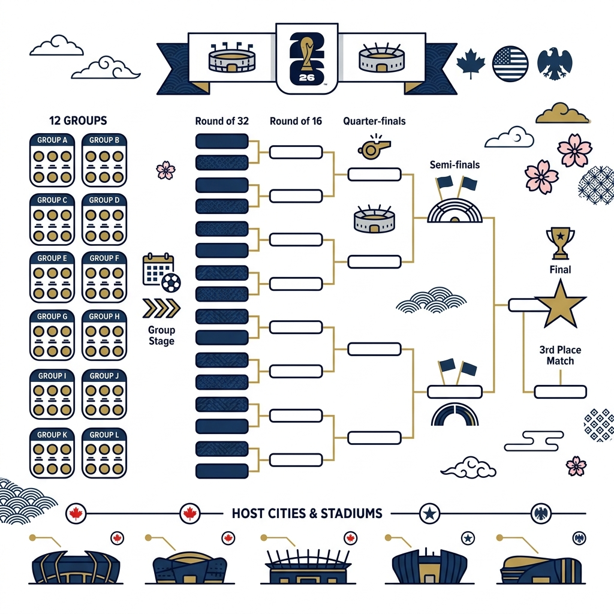
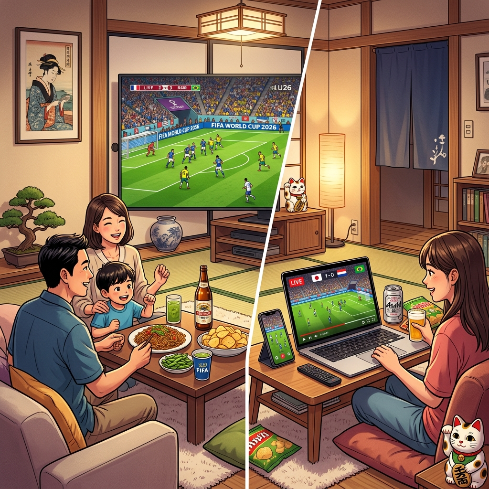

FIFAワールドカップ2026とは？大会概要と歴史的意義
サッカー界最大の祭典、FIFAワールドカップが2026年に北米3カ国（アメリカ、カナダ、メキシコ）で共同開催されます。この大会は、出場国がこれまでの32カ国から48カ国へと大幅に拡大され、史上最大規模のワールドカップとなることが決定しています。これにより、より多くの国に夢の舞台へのチャンスが与えられ、世界中のサッカーファンが熱狂することでしょう。
ワールドカップ2026は、単なるスポーツイベントに留まらず、開催国間の文化交流を促進し、地域経済に大きな影響を与えることが期待されています。新たなフォーマットでの開催は、試合数も増え、大会全体にわたる興奮とドラマがさらに高まること間違いなしです。
史上最大の大会となる2026年大会
2026年大会の最大の特徴は、出場国が48カ国に増加することです。これにより、グループステージの形式も変更され、より多くの試合が開催されることになります。この変更は、世界中のサッカー発展に寄与し、これまでワールドカップ出場が難しかった国々にも、歴史的な一歩を踏み出す機会を提供します。

ワールドカップ2026の開催日程：いつからいつまで？
FIFAワールドカップ2026の正確な開催日程は、2026年6月11日から7月19日までの予定です。約1ヶ月間にわたり、世界最高のサッカーの戦いが繰り広げられます。この期間中、ファンはグループステージからノックアウトステージ、そして決勝戦まで、息をのむような試合の数々を体験することになります。
グループステージから決勝までの流れ
拡大された大会形式では、48カ国が12のグループに分かれて戦います。各グループの上位チームがノックアウトステージに進出し、最終的に1カ国が栄光のトロフィーを掲げます。試合日程はFIFAから順次発表されるため、最新情報を常にチェックすることが重要です。
日本時間での試合開始時刻の目安
北米での開催となるため、日本との時差が大きなポイントとなります。アメリカ、カナダ、メキシコのタイムゾーンによって異なりますが、主要な試合は日本時間の深夜から早朝にかけて行われることが予想されます。リアルタイムでの観戦を計画している方は、事前に時差を考慮したスケジュール調整が必要です。
ワールドカップ2026の開催地：北米3カ国の魅力
FIFAワールドカップ2026は、アメリカ、カナダ、メキシコの3カ国で共同開催されます。これは史上初の試みであり、それぞれの国が持つ文化とスタジアムの多様性が、大会に新たな魅力を加えます。合計16都市が開催地として選ばれており、世界中のファンがそれぞれの都市の雰囲気を楽しむことができるでしょう。
アメリカ合衆国の開催都市とスタジアム
アメリカでは、アトランタ、ボストン、ダラス、ヒューストン、カンザスシティ、ロサンゼルス、マイアミ、ニューヨーク/ニュージャージー、フィラデルフィア、サンフランシスコ・ベイエリア、シアトルの11都市が選ばれました。NFLの巨大なスタジアムが使用され、数万人規模の観客を収容可能です。
カナダの開催都市とスタジアム
カナダからは、トロントとバンクーバーの2都市が選ばれています。これらの都市もまた、近代的な設備を備えたスタジアムで、熱気あふれる試合を演出することでしょう。
メキシコの開催都市とスタジアム
メキシコでは、グアダラハラ、メキシコシティ、モンテレイの3都市が開催地となります。特にメキシコシティのエスタディオ・アステカは、過去に2度のワールドカップ決勝が開催された歴史的なスタジアムであり、再びその舞台となることが期待されます。
ワールドカップ2026出場国と予選の状況
出場枠が48カ国に拡大されたことで、各大陸の予選も新たな局面を迎えています。これまで以上に多くの国が本大会への出場権を争うことになり、予選リーグから白熱した戦いが繰り広げられます。
出場枠拡大でチャンスが広がる
アジアやアフリカなどの大陸連盟には、これまでよりも多くの出場枠が割り当てられることになりました。これにより、これらの地域の国々にとって、ワールドカップ出場という長年の夢が現実となる可能性が高まります。
各大陸予選の最新情報
各大陸での予選は既に始まっているか、間もなく始まる予定です。FIFAの公式サイトなどで最新の予選状況や結果を確認し、お気に入りの国の動向を追いかけましょう。
日本代表のワールドカップ2026への道
森保ジャパンは、ワールドカップ2026出場に向けて既に動き出しています。アジア予選を勝ち抜き、北米の舞台で世界と戦うため、チーム一丸となって準備を進めています。
アジア最終予選の展望と注目選手
アジア予選は常に厳しい戦いですが、日本代表は常に優勝候補の一角です。若手選手の台頭と経験豊富なベテランの融合が、チームをさらに強くしています。久保建英選手、三笘薫選手、冨安健洋選手といった欧州で活躍する選手たちが、チームを牽引することが期待されます。
過去の成績と2026年大会への期待
日本代表は、過去のワールドカップでベスト16の壁を何度も経験してきました。2026年大会では、これまでの経験を活かし、さらなる高みを目指すことが期待されています。出場枠の拡大は、日本代表にとって有利に働く可能性もあります。
FIFAワールドカップ2026を日本から視聴する方法
待ちに待ったFIFAワールドカップ2026。日本から白熱の試合をリアルタイムで観戦したいと考えるファンも多いでしょう。ここでは、大会を余すところなく楽しむための視聴方法をご紹介します。
テレビ放送と配信サービス
日本では、主要なテレビ局が一部の試合を放送するほか、複数の配信サービスが全試合のライブストリーミングを提供する可能性があります。過去の大会と同様に、有料のスポーツ専門チャンネルやオンラインプラットフォームが主要な視聴手段となるでしょう。
ライブストリーミングで全試合を観戦するには
全試合をライブで視聴したい場合、公式な配信パートナーのサービスを利用するのが最も確実です。これらのサービスは、高画質での視聴や見逃し配信、多言語解説など、充実した機能を提供していることが多いです。

時差の関係でリアルタイムでの視聴が難しい試合も、見逃し配信やハイライトで楽しむことができます。どのサービスが最も自分に合っているか、事前に比較検討することをおすすめします。
おすすめの視聴環境と準備
安定したインターネット接続はもちろんのこと、大画面テレビやプロジェクター、高品質なオーディオ機器を用意することで、まるでスタジアムにいるかのような臨場感を味わうことができます。また、早朝の試合に備えて、カフェインや軽食を準備するのも良いでしょう。
ワールドカップ2026に関するよくある質問 (FAQ)
FIFAワールドカップ2026はいつ開催されますか？
FIFAワールドカップ2026は、2026年6月11日から7月19日までの期間で開催される予定です。
ワールドカップ2026の開催国はどこですか？
アメリカ合衆国、カナダ、メキシコの北米3カ国で共同開催されます。
日本からワールドカップ2026の試合を視聴するにはどうすればよいですか？
日本のテレビ放送局や、複数のオンライン配信サービスを通じて視聴できる予定です。公式パートナーの発表にご注目ください。
FIFAワールドカップ2026の参加国数は何カ国ですか？
2026年大会からは、これまでの32カ国から48カ国に拡大されます。
日本代表はワールドカップ2026に出場しますか？
日本代表は現在、アジア予選を戦っており、本大会出場を目指しています。今後の予選結果にご注目ください。
まとめ：歴史的な大会を見逃すな！
FIFAワールドカップ2026は、出場国数の拡大、初の3カ国共催など、歴史に名を刻む大会となることでしょう。開催日程、開催地、そして日本代表の活躍、さらに試合の視聴方法まで、この記事でご紹介した情報を参考に、この壮大なサッカーの祭典を存分にお楽しみください。世界中の注目が集まるこの大会を、最高の環境で観戦し、感動を共有しましょう！
開示：このページの一部のリンクはアフィリエイトリンクである可能性があります。これは、お客様がクリックして購入された場合、当社がコミッションを獲得する可能性があることを意味します。これはお客様に影響を与えることはなく、当社のプロジェクトをサポートするのに役立ちます。